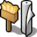
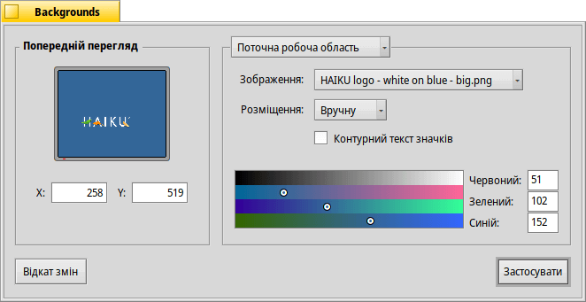

 Backgrounds (Фон)
| Deskbar: | ||
| Розташування: | /boot/system/preferences/Backgrounds | |
| Налаштування: | ~/config/settings/system/app_server/workspaces ~/config/settings/Backgrounds settings – зберігає позицію вікна панелі |
Ви можете призначити будь-який колір або зображення у якості фона для кожного робочого столу або папки.
Верхній випадаючий список дозволяє вибрати, чи будуть Ваші зміни застосовані лише до поточної робочої області, усіх робочих областей, певної папки чи як типові для кожної нової папки.
Під ним Ви можете призначити зображення або вибрати , коли бажаєте залишити тільки кольоровий фон. Зображення можна перетягнути мишею на вікно попереднього перегляду у лівій частині панелі.
Після вибору зображення необхідно визначитися з його розміщенням:
| дозволяє ввести координати вручну. Ви можете переміщати зображення у вікні попереднього перегляду (Preview) або ввести координати X та Y вручну. | ||
| розташовує зображення по центру екрану. | ||
| вписує зображення в екран, без урахування його співвідношення сторін. | ||
| заповнює екран зображеннями, що повторюються. |
Встановлення позначки у чекбоксі додає тонкий контур довкола тексту значка.
Яким буде фактичний текст значків (білим чи чорним) залежить від налаштувань набору кольорів. Темний колір робить текст білим, світлий – чорним. Отже, якщо Ви призначаєте дуже яскраве зображення для фону, Вам слід встановити яскравий колір в наборі кольорів, щоб текст значків був читабельним чорним. (Або ж задійте контури тексту як вказано вище).
Вибраний колір відобразится і в аплеті управління робочими столами, який ігнорує зображення у якості фону.
| повертає настройки, які були встановлені до запуску панелі Backgrounds (Фон). | ||
| застосовує встановлені настройки. |